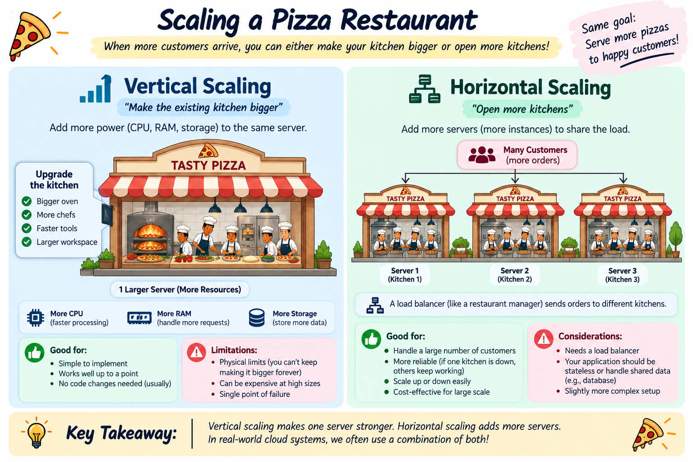

Master the technical trade-offs between Scaling Up (bigger hardware) and Scaling Out (more server nodes), database scaling strategies, load balancing requirements, and Capgemini assessment scenarios.
As user traffic grows, application servers and databases experience CPU spikes, memory exhaustion, and response latency. Software engineers use two fundamental approaches to handle increased load:
Increasing the physical capacity of an existing single server by adding more vCPUs, RAM, or faster NVMe SSD storage (e.g. upgrading an AWS EC2 instance from t3.medium with 4GB RAM to m5.4xlarge with 64GB RAM).
Adding more commodity server instances into a resource pool behind an Elastic Load Balancer (ELB). Instead of 1 massive server, traffic is distributed across 10 smaller worker nodes.
Visual representation comparing Vertical Scaling (adding CPU/RAM resources to a single instance) versus Horizontal Scaling (distributing requests across multiple instances via a Load Balancer).

Use this comparison matrix to answer architecture and assessment questions:
| Architectural Metric | Vertical Scaling (Scale-Up) | Horizontal Scaling (Scale-Out) |
|---|---|---|
| Primary Mechanism | Add CPU / RAM to single server | Add more server instances to fleet |
| Capacity Limit | Strict hardware ceiling (Max RAM/CPU) | Virtually Unlimited (Commodity clusters) |
| Fault Tolerance | Low (SPOF - Single Point of Failure) | High (Fault tolerant across multi-AZs) |
| Load Balancer Required? | No | Yes (ALB / NGINX / HAProxy) |
| Application Statefulness | Supports Stateful (In-memory sessions) | Requires Stateless design (Redis / JWT) |
| Resizing Downtime | Requires instance reboot/downtime | Zero-downtime (Rolling auto-scaling) |
| Cost Efficiency | High-end hardware gets exponentially expensive | Pay-as-you-go using cheap commodity instances |
Scaling databases is significantly harder than scaling web servers because databases maintain state on disk!
Relational databases rely on ACID transactions, making multi-master horizontal writes difficult.
NoSQL databases relax strict ACID constraints (BASE model) to achieve seamless horizontal scaling across clusters.
Simulate how Vertical Scaling vs Horizontal Scaling handles traffic surges and hardware crashes: